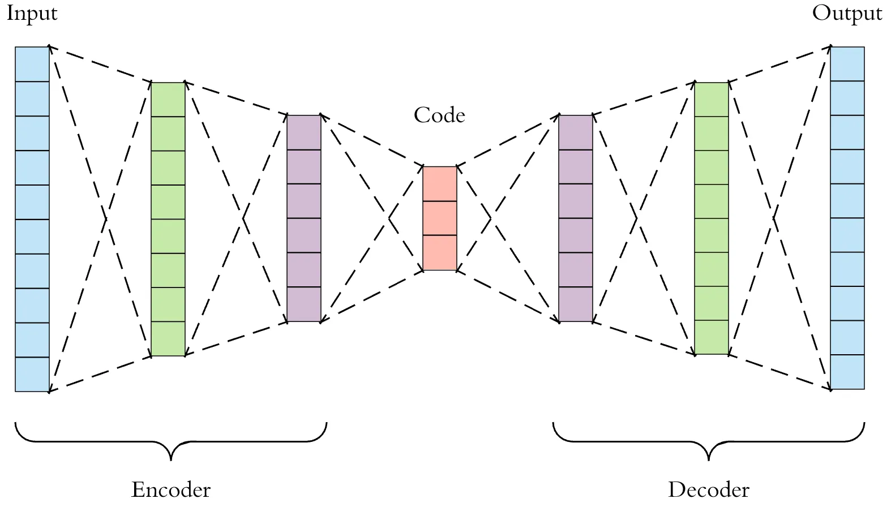

import numpy as np
import matplotlib.pyplot as plt
import tensorflow as tf
from tensorflow import keras
from tensorflow.keras.layers import Input, Dense
from tensorflow.keras.models import Model
from tensorflow.keras.datasets import mnist
# 加载数据
(x_train, _), (x_test, _) = mnist.load_data()
x_train = x_train.astype('float32') / 255.
x_test = x_test.astype('float32') / 255.
x_train = x_train.reshape((len(x_train), np.prod(x_train.shape[1:])))
x_test = x_test.reshape((len(x_test), np.prod(x_test.shape[1:])))
# 定义编码维度 (瓶颈层大小)
encoding_dim = 32
# 输入层
input_img = Input(shape=(784,))
# 编码器
encoded = Dense(128, activation='relu')(input_img)
encoded = Dense(64, activation='relu')(encoded)
encoded = Dense(encoding_dim, activation='relu')(encoded) # 瓶颈层
# 解码器
decoded = Dense(64, activation='relu')(encoded)
decoded = Dense(128, activation='relu')(decoded)
decoded = Dense(784, activation='sigmoid')(decoded) # 输出层用sigmoid，因为像素值在0-1
# 自编码器模型
autoencoder = Model(input_img, decoded)
# 编码器模型 (单独用于获取编码)
encoder = Model(input_img, encoded)
# 解码器模型 (单独用于从编码生成图像，需要定义其输入)
encoded_input = Input(shape=(encoding_dim,))
decoder_layer1 = autoencoder.layers[-3] # 重用autoencoder的解码器层
decoder_layer2 = autoencoder.layers[-2]
decoder_layer3 = autoencoder.layers[-1]
decoder = Model(encoded_input, decoder_layer3(decoder_layer2(decoder_layer1(encoded_input))))
# 编译
autoencoder.compile(optimizer='adam', loss='binary_crossentropy')
# 训练
autoencoder.fit(x_train, x_train, # 输入和目标都是x_train
epochs=50,
batch_size=256,
shuffle=True,
validation_data=(x_test, x_test),
verbose=0)
# 可视化重构结果
encoded_imgs = encoder.predict(x_test,verbose=0)
decoded_imgs = decoder.predict(encoded_imgs,verbose=0)
n = 10
plt.figure(figsize=(20, 4))
for i in range(n):
# 显示原始图像
ax = plt.subplot(2, n, i + 1)
plt.imshow(x_test[i].reshape(28, 28))
plt.gray()
ax.get_xaxis().set_visible(False)
ax.get_yaxis().set_visible(False)
# 显示重构图像
ax = plt.subplot(2, n, i + 1 + n)
plt.imshow(decoded_imgs[i].reshape(28, 28))
plt.gray()
ax.get_xaxis().set_visible(False)
ax.get_yaxis().set_visible(False)
# plt.savefig("images/13-advanced/ae_reconstruction.png")
plt.show()深度学习进阶
学习目标
学习目标：
- 理解注意力机制的基本原理及其在序列模型中的作用。
- 掌握Transformer模型的核心概念：自注意力、多头注意力、位置编码、编码器-解码器架构。
- 了解Transformer对现代自然语言处理 (NLP) 领域的革命性影响，以及BERT等预训练模型的概念。
- 理解自编码器 (AE) 的基本结构、工作原理及其在降维和特征学习中的应用。
- 理解变分自编码器 (VAE) 的原理，包括学习数据分布、潜在空间和重参数化技巧，并了解其生成新样本的能力。
- 掌握生成对抗网络 (GAN) 的基本思想：生成器与判别器的对抗学习过程。
- 能够使用Keras实现简单的AE、VAE和GAN模型。
- 理解迁移学习的概念、重要性以及常见的策略（特征提取、模型微调）。
- 能够使用Keras实践迁移学习，利用预训练的CNN模型解决新的图像分类任务。
- 对深度学习模型部署的基本流程和相关工具有初步认识。
13.1 引言
在前面的章节中，我们已经学习了深度学习的基础，以及两类核心的神经网络架构：卷积神经网络 (CNN) 和循环神经网络 (RNN)。CNN在处理网格状数据（如图像）方面表现出色，而RNN则擅长处理序列数据（如文本和时间序列）。
然而，深度学习领域仍在飞速发展，不断涌现出更强大、更灵活的模型和技术。本章将带你进入深度学习的进阶领域，探索一些近年来极具影响力的概念和架构，包括：
- 注意力机制 (Attention Mechanisms) 和基于它的 Transformer 模型，它们彻底改变了自然语言处理的面貌。
- 生成模型 (Generative Models)，如自编码器 (AE)、变分自编码器 (VAE) 和生成对抗网络 (GAN)，它们能够学习数据的内在结构并生成新的数据样本。
- 迁移学习 (Transfer Learning)，一种强大的技术，允许我们将从一个任务上学到的知识应用于另一个相关任务，特别是在数据量有限的情况下。
这些进阶主题将为你打开通往更复杂、更前沿深度学习应用的大门。
13.2 注意力机制与Transformer
传统的RNN（包括LSTM和GRU）在处理长序列时，尽管有所改进，但仍然面临信息瓶颈问题——即试图将整个输入序列的”意义”压缩到一个固定大小的隐藏状态向量中。对于非常长的序列，这可能导致早期信息的丢失。
注意力机制 (Attention Mechanism) 最初是为了改进神经机器翻译中的编码器-解码器架构而提出的。其核心思想是允许解码器在生成每个输出词时，能够”关注”输入序列中不同部分的相关性，并动态地赋予它们不同的权重。
13.2.1 注意力机制的基本思想
想象一下你在翻译一个长句子。当你翻译某个词时，你不会平等地看待原文中的所有词，而是会特别关注与当前翻译相关的几个词。注意力机制模仿了这种行为。
在基于RNN的编码器-解码器模型中：
- 编码器 (Encoder) 将输入序列编码成一系列隐藏状态（而不是仅仅最后一个隐藏状态）。
- 解码器 (Decoder) 在生成每个目标词时，会计算一个”注意力权重”分布，该分布表示输入序列中每个位置对于当前生成步骤的重要性。
- 然后，解码器使用这些权重对编码器的隐藏状态进行加权求和，得到一个”上下文向量 (Context Vector)“。
- 这个上下文向量富含了与当前解码步骤最相关的输入信息，然后被用于预测下一个目标词。
常见的注意力类型包括Bahdanau注意力和Luong注意力，它们在计算注意力权重的方式上略有不同。
Bahdanau注意力机制（又称加法注意力）是2014年由Dzmitry Bahdanau等人提出的首个神经注意力机制，主要应用于机器翻译任务。其核心特点包括：
- 结构组成：
- 编码器：双向RNN生成每个时间步的隐藏状态
- 解码器：通过注意力权重动态组合编码器状态
- 计算过程：
- 对齐模型：\(e_{ij} = v_a^T \tanh(W_a s_{i-1} + U_a h_j)\)
- \(s_{i-1}\): 解码器上一时刻隐藏状态
- \(h_j\): 编码器第j时刻隐藏状态
- \(v_a, W_a, U_a\): 可学习参数
- 注意力权重：\(\alpha_{ij} = \text{softmax}(e_{ij})\)
- 上下文向量：\(c_i = \sum_j \alpha_{ij}h_j\)
- 对齐模型：\(e_{ij} = v_a^T \tanh(W_a s_{i-1} + U_a h_j)\)
- 主要优势：
- 自动学习源语言和目标语言的词对齐
- 有效处理长距离依赖
- 输出可解释的注意力分布

Bahdanau注意力的重要意义
Bahdanau注意力机制在深度学习发展历程中具有里程碑式的意义：
- 突破固定长度瓶颈：
- 传统编码器-解码器结构需要将整个输入序列压缩为固定长度的上下文向量
- 注意力机制允许动态生成与解码位置相关的上下文向量
- 建立显式对齐机制：
- 首次在神经网络中实现了源序列和目标序列的软对齐
- 可解释性强，注意力权重直观显示模型关注点
- 处理长序列优势：
- 有效缓解了RNN处理长序列时的信息衰减问题
- 为后续Transformer架构奠定基础
- 跨领域影响：
- 不仅改进机器翻译，还启发了：
- 计算机视觉中的视觉注意力
- 语音处理中的声学注意力
- 多模态学习中的跨模态注意力
- 不仅改进机器翻译，还启发了：
- 方法论贡献：
- 开创了”查询-键-值”的注意力计算范式
- 证明了注意力权重可学习性
- 为后续自注意力机制提供理论依据
13.2.2 自注意力 (Self-Attention)
注意力机制不仅可以用在编码器和解码器之间，还可以用在单个序列内部，这就是所谓的自注意力 (Self-Attention)，也称为内部注意力 (Intra-Attention)。
自注意力允许模型在处理序列中的每个元素时，都能够衡量序列中所有其他元素对当前元素的重要性。换句话说，它计算序列中每个词与其他所有词（包括自身）之间的关联度。
Query, Key, Value (QKV) 模型：
自注意力的计算通常通过Query, Key, Value这三个向量来描述：
- 对于序列中的每个输入元素（例如，一个词的嵌入向量），我们通过乘以三个不同的权重矩阵，分别生成它的Query向量 (\(\mathbf{q}\))、Key向量 (\(\mathbf{k}\))、和Value向量 (\(\mathbf{v}\))。这些权重矩阵是模型学习得到的参数。
- 要计算某个位置的输出，我们取该位置的Query向量，并将其与序列中所有其他位置的Key向量进行点积（或其他相似度计算），然后通过Softmax归一化得到注意力权重。
- 这些注意力权重随后用于对所有位置的Value向量进行加权求和，得到该位置的自注意力输出。
\[ \text{Attention}(\mathbf{Q}, \mathbf{K}, \mathbf{V}) = \text{softmax}\left(\frac{\mathbf{Q}\mathbf{K}^T}{\sqrt{d_k}}\right) \mathbf{V} \]
其中 \(d_k\) 是Key向量的维度，除以 \(\sqrt{d_k}\) 是为了缩放点积结果，防止梯度过小。
13.2.3 多头自注意力 (Multi-Head Self-Attention)
为了让模型能够同时关注来自不同表示子空间的信息，Transformer引入了多头自注意力 (Multi-Head Self-Attention)。
它不是只计算一次自注意力，而是并行地执行多次自注意力计算（每个称为一个”头”）。在每个头中，Query, Key, Value向量首先被线性投影到较低的维度，然后进行自注意力计算。每个头的输出被拼接起来，再经过一次线性投影得到最终的多头注意力输出。

多头机制使得模型可以在不同位置、不同表示子空间中共同学习相关信息。
通俗理解注意力机制
想象你在参加一场多国语言会议：
- 传统翻译(无注意力)：
- 同声传译员必须记住整段发言才能翻译
- 长段落时容易遗漏细节
- 类似RNN的固定长度瓶颈问题
- 带注意力的翻译：
- 翻译每个句子时，传译员会：
- 快速扫视发言稿(编码器状态)
- 用荧光笔标记当前最相关的部分(注意力权重)
- 重点参考标记内容生成翻译(上下文向量)
- 类似人脑的注意力聚焦机制
- 翻译每个句子时，传译员会：
- 自注意力场景：
- 就像会议记录员整理笔记时：
- 看到”人工智能”时会自动关联前文的”深度学习”
- 发现”股价”与”财报数据”的对应关系
- 建立文档内部的语义关联网络
- 就像会议记录员整理笔记时：
- 多头注意力的优势：
- 如同多个专家同时分析：
- 语法专家关注句子结构
- 术语专家聚焦专业词汇
- 逻辑专家把握论述脉络
- 综合各方意见得到更全面的理解
- 如同多个专家同时分析：
13.2.4 Transformer架构
Transformer模型由Google Brain团队的Ashish Vaswani、Noam Shazeer、Niki Parmar、Jakob Uszkoreit、Llion Jones、Aidan N. Gomez、Lukasz Kaiser和Illia Polosukhin在2017年的开创性论文《Attention Is All You Need》中首次提出。这一革命性架构完全摒弃了传统RNN的循环结构和CNN的卷积操作，创新性地仅依赖自注意力机制来处理序列数据。
Transformer的核心架构也是一个编码器-解码器 (Encoder-Decoder) 结构：
- 编码器 (Encoder)： 由N个相同的层堆叠而成。每层包含两个主要子层：
- 一个多头自注意力层 (Multi-Head Self-Attention Layer)。
- 一个简单的位置全连接前馈网络 (Position-wise Fully Connected Feed-Forward Network)。 每个子层周围都有残差连接 (Residual Connection) 和层归一化 (Layer Normalization)。
- 解码器 (Decoder)： 也由N个相同的层堆叠而成。每层除了编码器中的两个子层外，还插入了第三个子层：
- 一个”掩码”多头自注意力层 (Masked Multi-Head Self-Attention Layer)，确保在预测当前位置时只能关注到已生成的部分，不会”看到未来”。
- 一个多头注意力层，其Query来自前一个解码器子层，而Key和Value来自编码器的输出（这实现了编码器-解码器之间的注意力）。
- 一个位置全连接前馈网络。 同样，每个子层周围也有残差连接和层归一化。

位置编码 (Positional Encoding)： 由于Transformer没有循环或卷积结构，它本身无法感知序列中元素的位置信息。为了解决这个问题，Transformer在输入嵌入向量中加入了位置编码 (Positional Encoding)。这些编码是根据元素在序列中的绝对或相对位置计算得到的固定或可学习的向量，它们为模型提供了关于元素顺序的信息。
Transformer的影响： Transformer凭借其强大的并行计算能力（自注意力可以对序列中的所有元素同时计算）和捕捉长距离依赖的能力，在自然语言处理领域取得了巨大成功，催生了如BERT、GPT、T5等一系列大规模预训练语言模型，并在机器翻译、文本摘要、问答等任务上刷新了记录。其思想也被扩展到计算机视觉、语音识别等其他领域。
13.2.5 BERT等预训练模型简介
BERT (Bidirectional Encoder Representations from Transformers) 是由Google AI团队的Jacob Devlin、Ming-Wei Chang、Kenton Lee和Kristina Toutanova在2018年发表的论文《BERT: Pre-training of Deep Bidirectional Transformers for Language Understanding》中提出的基于Transformer编码器架构的预训练语言模型。它通过在大型无标签文本语料库上进行两种预训练任务来学习通用的语言表示：
- 掩码语言模型 (Masked Language Model, MLM)： 随机遮盖输入句子中的一些词，然后让模型预测这些被遮盖的词。
- 下一句预测 (Next Sentence Prediction, NSP)： 给模型两个句子A和B，让模型判断句子B是否是句子A的下一句。
通过这两个任务，BERT能够学习到丰富的上下文相关的词嵌入表示。预训练好的BERT模型可以作为基础，通过在其上添加一个简单的输出层，并针对特定下游任务（如文本分类、问答、命名实体识别）进行微调 (fine-tuning)，从而在这些任务上取得优异的性能，即使下游任务的标注数据量很小。
BERT的成功开启了大规模预训练语言模型的时代，后续出现了许多改进模型，如RoBERTa, XLNet, ALBERT, GPT系列等。
13.3 生成模型 (Generative Models)
生成模型的目标是学习训练数据的内在分布，并能够从这个学到的分布中生成新的、与训练数据相似的样本。常见的生成模型包括自编码器、变分自编码器和生成对抗网络。
13.3.1 自编码器 (Autoencoders, AE)
自编码器(Autoencoder)最早由Rumelhart等人在1986年的论文《Learning representations by back-propagating errors》中提出，是一种无监督的神经网络，其目标是学习输入数据的有效编码（压缩表示），并能够从该编码重构出原始输入。
结构：
一个典型的自编码器由两部分组成：
- 编码器 (Encoder)： 将输入数据 \(\mathbf{x}\) 映射到一个低维的潜在表示 (latent representation) 或编码 (code) \(\mathbf{z}\)。 \[ \mathbf{z} = f_{enc}(\mathbf{x}) \]
- 解码器 (Decoder)： 将潜在表示 \(\mathbf{z}\) 映射回重构的输入数据 \(\mathbf{x}'\)。 \[ \mathbf{x}' = f_{dec}(\mathbf{z}) \]
网络的训练目标是最小化重构误差，即原始输入 \(\mathbf{x}\) 与重构输出 \(\mathbf{x}'\) 之间的差异（例如，使用均方误差MSE或二元交叉熵）。
\[ L(\mathbf{x}, \mathbf{x}') = || \mathbf{x} - \mathbf{x}' ||^2 \]

如果潜在表示 \(\mathbf{z}\) 的维度远小于输入 \(\mathbf{x}\) 的维度，那么编码器被迫学习输入数据中最显著的特征，从而实现降维和特征学习。这个瓶颈层 (bottleneck layer) 是自编码器的核心。
应用：
- 降维 (Dimensionality Reduction)： 类似于PCA，但可以学习非线性映射。
- 特征学习 (Feature Learning)： 编码器部分可以作为预训练模型提取特征。
- 数据去噪 (Denoising Autoencoders)： 通过在输入中加入噪声，并让模型重构原始的、干净的输入，可以学习到更鲁棒的特征表示。
- 异常检测 (Anomaly Detection)： 对于正常数据，重构误差通常较小；对于异常数据，重构误差会较大。
Keras实现简单AE (MNIST示例):
13.3.2 变分自编码器 (Variational Autoencoders, VAEs)
标准的自编码器学习的是一个从输入到潜在空间的确定性映射。虽然它们可以用于降维和重构，但它们的潜在空间可能没有很好的结构性，直接在潜在空间采样并解码，不一定能生成有意义的新样本。
变分自编码器 (Variational Autoencoder, VAE) (Kingma & Welling, 2014) 是一种基于概率图模型的生成式神经网络架构，它通过引入变分推断方法对传统自编码器进行了概率化扩展。VAE的核心创新在于将输入数据映射到一个潜在空间的概率分布而非确定性编码，从而能够学习数据生成过程的潜在概率结构。
核心思想：
- 编码器 (Encoder / Recognition Network)： 不再直接输出一个潜在编码 \(\mathbf{z}\)，而是输出潜在变量的概率分布的参数。通常假设这个分布是高斯分布，所以编码器输出均值 \(\boldsymbol{\mu}\) 和标准差（或对数方差）\(\boldsymbol{\sigma}\)。 \[ q(\mathbf{z}|\mathbf{x}) = \mathcal{N}(\mathbf{z} | \boldsymbol{\mu}(\mathbf{x}), \boldsymbol{\sigma}^2(\mathbf{x})\mathbf{I}) \]
- 潜在空间采样 (Sampling)： 从学习到的分布 \(q(\mathbf{z}|\mathbf{x})\) 中采样一个点 \(\mathbf{z}\)。
- 重参数化技巧 (Reparameterization Trick)： 为了使采样过程可导（从而可以通过反向传播进行训练），通常使用重参数化技巧：\(\mathbf{z} = \boldsymbol{\mu} + \boldsymbol{\sigma} \odot \boldsymbol{\epsilon}\)，其中 \(\boldsymbol{\epsilon}\) 是从标准正态分布 \(\mathcal{N}(0, \mathbf{I})\) 中采样的噪声。
- 解码器 (Decoder / Generative Network)： 将采样的潜在向量 \(\mathbf{z}\) 解码回重构的输入数据 \(\mathbf{x}'\)。 \[ p(\mathbf{x}|\mathbf{z}) \]
损失函数：
VAE的损失函数包含两部分：
- 重构损失 (Reconstruction Loss)： 与AE类似，衡量原始输入与重构输出之间的差异。例如，对于图像可以是二元交叉熵或MSE。 \[ L_{recon} = -\mathbb{E}_{q(\mathbf{z}|\mathbf{x})}[\log p(\mathbf{x}|\mathbf{z})] \]
- KL散度 (KL Divergence) 正则项： 衡量编码器学习到的潜在分布 \(q(\mathbf{z}|\mathbf{x})\) 与一个预定义的先验分布 \(p(\mathbf{z})\) (通常是标准正态分布 \(\mathcal{N}(0, \mathbf{I})\)) 之间的差异。这个正则项迫使潜在空间具有良好的结构（例如，连续和平滑），使得我们可以从先验分布 \(p(\mathbf{z})\) 中采样并生成新的、有意义的数据。 \[ L_{KL} = D_{KL}(q(\mathbf{z}|\mathbf{x}) || p(\mathbf{z})) \]
总损失为： \(L_{VAE} = L_{recon} + \beta L_{KL}\) (其中 \(\beta\) 是一个超参数，用于平衡两项损失)
生成新样本： 一旦VAE训练完成，我们可以通过从先验分布 \(p(\mathbf{z})\) (例如，标准正态分布) 中采样一个潜在向量 \(\mathbf{z}_{new}\)，然后将其输入解码器，得到新的数据样本 \(\mathbf{x}_{new} = f_{dec}(\mathbf{z}_{new})\)。
Keras实现简单VAE (MNIST示例):
import numpy as np
import matplotlib.pyplot as plt
import tensorflow as tf
from tensorflow import keras
from tensorflow.keras.layers import Input, Dense, Lambda
from tensorflow.keras.models import Model
from tensorflow.keras.datasets import mnist
from tensorflow.keras import backend as K
# 加载数据
(x_train, y_train), (x_test, y_test) = mnist.load_data()
original_dim = 28 * 28
x_train = x_train.astype('float32') / 255.
x_test = x_test.astype('float32') / 255.
x_train = x_train.reshape((len(x_train), np.prod(x_train.shape[1:])))
x_test = x_test.reshape((len(x_test), np.prod(x_test.shape[1:])))
# 网络参数
input_shape = (original_dim, )
intermediate_dim = 512
latent_dim = 2 # 潜在空间维度设为2，方便可视化
batch_size = 128
epochs = 10
# === 编码器 ===
inputs = Input(shape=input_shape, name='encoder_input')
x = Dense(intermediate_dim, activation='relu')(inputs)
z_mean = Dense(latent_dim, name='z_mean')(x)
z_log_var = Dense(latent_dim, name='z_log_var')(x)
# 重参数化技巧
def sampling(args):
z_mean, z_log_var = args
batch = K.shape(z_mean)[0]
dim = K.int_shape(z_mean)[1]
epsilon = K.random_normal(shape=(batch, dim))
return z_mean + K.exp(0.5 * z_log_var) * epsilon
z = Lambda(sampling, output_shape=(latent_dim,), name='z')([z_mean, z_log_var])
encoder = Model(inputs, [z_mean, z_log_var, z], name='encoder')
# encoder.summary()
# === 解码器 ===
latent_inputs = Input(shape=(latent_dim,), name='decoder_input')
x = Dense(intermediate_dim, activation='relu')(latent_inputs)
outputs = Dense(original_dim, activation='sigmoid')(x)
decoder = Model(latent_inputs, outputs, name='decoder')
# decoder.summary()
# === VAE模型 ===
outputs = decoder(encoder(inputs)[2]) # VAE的输出是解码器对编码器采样结果的重构
vae = Model(inputs, outputs, name='vae')
# VAE损失函数
reconstruction_loss = keras.losses.binary_crossentropy(inputs, outputs)
reconstruction_loss *= original_dim
kl_loss_terms = 1 + z_log_var - tf.math.square(z_mean) - tf.math.exp(z_log_var)
kl_loss = tf.reduce_sum(kl_loss_terms, axis=-1)
kl_loss *= -0.5
vae_loss = tf.reduce_mean(reconstruction_loss + kl_loss)
vae.add_loss(vae_loss)
vae.compile(optimizer='adam')
# vae.summary()
# 训练VAE
vae.fit(x_train,
epochs=epochs,
batch_size=batch_size,
validation_data=(x_test, None), # 验证时不需要标签
verbose=0)
# 可视化潜在空间
def plot_latent_space(vae_encoder, data, labels, n=30, figsize=15):
x_data, y_data = data
z_mean, _, _ = vae_encoder.predict(x_data)
plt.figure(figsize=(figsize, figsize))
plt.scatter(z_mean[:, 0], z_mean[:, 1], c=labels)
plt.colorbar()
plt.xlabel("z[0]")
plt.ylabel("z[1]")
# plt.savefig("images/13-advanced/vae_latent_space.png")
plt.show()
plot_latent_space(encoder, (x_test, y_test))
# 可视化生成的新数字
def plot_generated_images(vae_decoder, n=10, figsize=15, latent_dim=2):
# 从二维潜在空间中网格采样
grid_x = np.linspace(-4, 4, n)
grid_y = np.linspace(-4, 4, n)[::-1] # y轴反转以匹配常见图像显示
figure = np.zeros((28 * n, 28 * n))
for i, yi in enumerate(grid_y):
for j, xi in enumerate(grid_x):
if latent_dim == 2:
z_sample = np.array([[xi, yi]])
else: # 对于更高维潜在空间，随机采样
z_sample = np.random.normal(size=(1, latent_dim))
x_decoded = vae_decoder.predict(z_sample, verbose=0)
digit = x_decoded[0].reshape(28, 28)
figure[i * 28: (i + 1) * 28, j * 28: (j + 1) * 28] = digit
plt.figure(figsize=(figsize, figsize))
start_range = 28 // 2
end_range = n * 28 + start_range
pixel_range = np.arange(start_range, end_range, 28)
sample_range_x = np.round(grid_x, 1)
sample_range_y = np.round(grid_y, 1)
plt.xticks(pixel_range, sample_range_x)
plt.yticks(pixel_range, sample_range_y)
plt.xlabel("z[0]")
plt.ylabel("z[1]")
plt.imshow(figure, cmap='Greys_r')
# plt.savefig("images/13-advanced/vae_generated_digits.png")
plt.show()
plot_generated_images(decoder, latent_dim=latent_dim)13.3.3 生成对抗网络 (Generative Adversarial Networks, GANs)
生成对抗网络 (GAN) 由Ian Goodfellow等人在2014年提出，是一种强大的生成模型框架。GAN的核心思想是通过两个神经网络的对抗过程来学习数据的分布：
- 生成器 (Generator, G)： 试图生成与真实数据无法区分的”假”数据。它接收一个随机噪声向量（通常从高斯分布或均匀分布采样）作为输入，并输出一个与真实数据维度相同的样本。
- 判别器 (Discriminator, D)： 试图区分真实数据和由生成器生成的假数据。它接收一个数据样本（真实的或假的）作为输入，并输出该样本为真实数据的概率。
对抗过程：
- 生成器G的目标是”欺骗”判别器D，使其无法分辨生成的样本和真实样本。
- 判别器D的目标是尽可能准确地识别出假样本。
这是一个零和博弈 (zero-sum game)。在训练过程中，G和D交替更新：
- 训练判别器D： 固定生成器G，从真实数据集中采样一批真实样本，同时让G生成一批假样本。训练D来区分这两批样本（例如，真实样本标签为1，假样本标签为0）。
- 训练生成器G： 固定判别器D，让G生成一批假样本，并试图让D将这些假样本误判为真实样本（即，G的损失函数旨在最大化D将其生成的样本判为真的概率）。此时，梯度会通过D反向传播到G，指导G如何生成更逼真的样本。
这个过程持续进行，理想情况下，生成器会学会生成非常逼真的数据，而判别器则难以区分真假。
损失函数 (以原始GAN为例)：
判别器的损失函数（最大化）： \[ L_D = \mathbb{E}_{\mathbf{x} \sim p_{data}(\mathbf{x})}[\log D(\mathbf{x})] + \mathbb{E}_{\mathbf{z} \sim p_z(\mathbf{z})}[\log(1 - D(G(\mathbf{z})))] \]
生成器的损失函数（最小化，等价于最大化 \(D(G(\mathbf{z}))\)）： \[ L_G = \mathbb{E}_{\mathbf{z} \sim p_z(\mathbf{z})}[\log(1 - D(G(\mathbf{z})))] \quad \text{或在实践中常用} \quad L_G = -\mathbb{E}_{\mathbf{z} \sim p_z(\mathbf{z})}[\log D(G(\mathbf{z}))] \]
挑战：
GAN的训练是出了名的困难和不稳定，常见的问题包括：
- 模式崩溃 (Mode Collapse)： 生成器只学会生成少数几种看起来不错的样本，而无法覆盖数据分布的多样性。
- 训练不稳定 (Non-convergence)： 生成器和判别器的训练可能无法达到一个稳定的平衡点。
- 梯度消失： 如果判别器过于强大，生成器的梯度可能会消失。
为了解决这些问题，研究人员提出了许多GAN的变种，如DCGAN (Deep Convolutional GAN), WGAN (Wasserstein GAN), StyleGAN等，它们在网络结构、损失函数和训练策略上进行了改进。
Keras实现简单GAN (MNIST示例):
import numpy as np
import matplotlib.pyplot as plt
import tensorflow as tf
from tensorflow import keras
from tensorflow.keras.layers import Input, Dense, Reshape, Flatten, Dropout, LeakyReLU
from tensorflow.keras.layers import BatchNormalization # 通常用于更稳定的GAN训练
from tensorflow.keras.models import Sequential, Model
from tensorflow.keras.optimizers import Adam
from tensorflow.keras.datasets import mnist
# --- 参数 ---
img_rows, img_cols, channels = 28, 28, 1
img_shape = (img_rows, img_cols, channels)
latent_dim = 100 # 噪声向量维度
# --- 构建生成器 G ---
def build_generator():
model = Sequential([
Dense(256, input_dim=latent_dim),
LeakyReLU(alpha=0.2),
BatchNormalization(momentum=0.8),
Dense(512),
LeakyReLU(alpha=0.2),
BatchNormalization(momentum=0.8),
Dense(1024),
LeakyReLU(alpha=0.2),
BatchNormalization(momentum=0.8),
Dense(np.prod(img_shape), activation='tanh'), # 输出像素值在[-1, 1]
Reshape(img_shape)
], name="generator")
# model.summary()
noise = Input(shape=(latent_dim,))
img = model(noise)
return Model(noise, img)
# --- 构建判别器 D ---
def build_discriminator():
model = Sequential([
Flatten(input_shape=img_shape),
Dense(512),
LeakyReLU(alpha=0.2),
Dense(256),
LeakyReLU(alpha=0.2),
Dense(1, activation='sigmoid') # 输出为真实图像的概率
], name="discriminator")
# model.summary()
img = Input(shape=img_shape)
validity = model(img)
return Model(img, validity)
# --- 构建并编译GAN ---
# 判别器
discriminator = build_discriminator()
discriminator.compile(loss='binary_crossentropy',
optimizer=Adam(0.0002, 0.5),
metrics=['accuracy'])
# 生成器
generator = build_generator()
# 对于组合模型，我们只训练生成器
discriminator.trainable = False # 关键步骤！
z = Input(shape=(latent_dim,))
img_ = generator(z)
valid = discriminator(img_)
# 组合模型 (堆叠生成器和判别器)
combined = Model(z, valid, name="gan")
combined.compile(loss='binary_crossentropy', optimizer=Adam(0.0002, 0.5))
# --- 训练GAN ---
def train_gan(epochs, batch_size=128, sample_interval=50):
# 加载数据
(X_train, _), (_, _) = mnist.load_data()
# 归一化到 [-1, 1] (因为生成器输出用tanh)
X_train = (X_train.astype(np.float32) - 127.5) / 127.5
X_train = np.expand_dims(X_train, axis=3)
# 对抗训练的标签
valid = np.ones((batch_size, 1))
fake = np.zeros((batch_size, 1))
for epoch in range(epochs):
# --- 训练判别器 ---
# 随机选择一批真实图像
idx = np.random.randint(0, X_train.shape[0], batch_size)
real_imgs = X_train[idx]
# 生成一批假图像
noise = np.random.normal(0, 1, (batch_size, latent_dim))
gen_imgs = generator.predict(noise, verbose=0)
# 训练判别器 (真实图像标签为1，假图像标签为0)
d_loss_real = discriminator.train_on_batch(real_imgs, valid)
d_loss_fake = discriminator.train_on_batch(gen_imgs, fake)
d_loss = 0.5 * np.add(d_loss_real, d_loss_fake)
# --- 训练生成器 ---
# 生成器试图让判别器将假图像标记为真实 (标签为1)
g_loss = combined.train_on_batch(noise, valid)
# 打印进度
# if epoch % sample_interval == 0:
# print(f"{epoch} [D loss: {d_loss[0]:.4f}, acc.: {100*d_loss[1]:.2f}%] [G loss: {g_loss:.4f}]")
# # 保存生成的图像样本
# # sample_images(epoch)
# def sample_images(epoch, save_dir="images/13-advanced/gan_generated"):
# r, c = 5, 5
# noise = np.random.normal(0, 1, (r * c, latent_dim))
# gen_imgs = generator.predict(noise, verbose=0)
# # 重缩放到 [0, 1]
# gen_imgs = 0.5 * gen_imgs + 0.5
# fig, axs = plt.subplots(r, c)
# cnt = 0
# for i in range(r):
# for j in range(c):
# axs[i,j].imshow(gen_imgs[cnt, :,:,0], cmap='gray')
# axs[i,j].axis('off')
# cnt += 1
# # fig.savefig(f"{save_dir}/mnist_{epoch}.png")
# # plt.close()
# # 训练 (如果实际运行，会比较耗时)
# # train_gan(epochs=1000, batch_size=32, sample_interval=200) 13.4 迁移学习 (Transfer Learning)
迁移学习是一种机器学习技术，其核心思想是将从一个任务（源任务）上学习到的知识和模型，应用于另一个相关但不同的任务（目标任务）。这在深度学习中尤其强大和流行，因为训练深度神经网络通常需要大量的标注数据和计算资源。
为什么迁移学习有效？
深度神经网络，特别是CNN，在处理图像等数据时，具有学习层次化特征的能力：
- 浅层通常学习通用的低级特征，如边缘、角点、颜色块等。
- 中层学习更复杂的模式和纹理，如物体的局部部件。
- 深层学习更抽象、更特定于任务的高级特征。
对于许多视觉任务，这些浅层和中层学习到的特征具有很好的通用性，可以被迁移到新的任务中。
常见策略：
- 作为特征提取器 (Feature Extractor)：
- 取一个在大型数据集（如ImageNet）上预训练好的CNN模型（例如VGG16, ResNet50, InceptionV3）。
- 移除其顶部的全连接分类层。
- 将其余部分（通常是卷积基）作为固定的特征提取器。将新任务的数据输入这个固定的卷积基，得到特征向量。
- 然后，在这些提取的特征之上训练一个新的、较小的分类器（例如一个简单的全连接网络）。
- 这种方法适用于目标任务数据量较小，且与源任务差异较大的情况。
- 微调预训练模型 (Fine-tuning)：
- 与特征提取类似，也是从预训练模型开始。
- 不仅替换顶部分类层，还会解冻卷积基的一部分（通常是顶部的几层），并与新的分类器一起在目标任务数据上进行端到端的重新训练（通常使用较小的学习率）。
- 底部的卷积层通常保持冻结，因为它们学习到的通用特征仍然有用且不应轻易改变。
- 这种方法适用于目标任务数据量相对较多，或者与源任务非常相似的情况。
Keras实践：使用预训练的VGG16进行图像分类
假设我们有一个新的、较小的猫狗图像分类任务。
import numpy as np
import tensorflow as tf
from tensorflow import keras
from tensorflow.keras.applications import VGG16
from tensorflow.keras.layers import Dense, Flatten, Dropout
from tensorflow.keras.models import Model
from tensorflow.keras.preprocessing.image import ImageDataGenerator # 用于数据增强和加载
# --- 参数 ---
img_width, img_height = 150, 150 # VGG16期望的输入尺寸 (至少32x32，通常224x224)
# 这里用150x150作为示例
train_data_dir = 'path/to/your/cats_and_dogs_small/train' # 替换为你的数据路径
validation_data_dir = 'path/to/your/cats_and_dogs_small/validation'
nb_train_samples = 2000 # 假设训练集有2000张图片
nb_validation_samples = 800 # 假设验证集有800张图片
epochs = 5 # 少量epochs用于演示
batch_size = 20
if tf.keras.backend.image_data_format() == 'channels_first':
input_shape = (3, img_width, img_height)
else:
input_shape = (img_width, img_height, 3)
# --- 1. 使用预训练模型作为特征提取器 ---
# 加载VGG16模型，不包括顶部的全连接层，使用ImageNet预训练权重
conv_base = VGG16(weights='imagenet',
include_top=False,
input_shape=input_shape)
# # 冻结卷积基 (使其权重在训练中不更新)
# conv_base.trainable = False
# # # 添加新的分类器
# model_feat_ext = keras.models.Sequential([
# conv_base,
# Flatten(),
# Dense(256, activation='relu'),
# Dropout(0.5),
# Dense(1, activation='sigmoid') # 二分类 (猫/狗)
# ])
# # model_feat_ext.summary()
# # # 编译模型
# # model_feat_ext.compile(optimizer=keras.optimizers.RMSprop(learning_rate=2e-5),
# # loss='binary_crossentropy',
# # metrics=['accuracy'])
# # # 数据预处理和增强
# # train_datagen = ImageDataGenerator(
# # rescale=1./255,
# # rotation_range=40,
# # width_shift_range=0.2,
# # height_shift_range=0.2,
# # shear_range=0.2,
# # zoom_range=0.2,
# # horizontal_flip=True,
# # fill_mode='nearest')
# # test_datagen = ImageDataGenerator(rescale=1./255) # 验证/测试数据不增强
# # train_generator = train_datagen.flow_from_directory(
# # train_data_dir,
# # target_size=(img_width, img_height),
# # batch_size=batch_size,
# # class_mode='binary') # 因为是二分类
# # validation_generator = test_datagen.flow_from_directory(
# # validation_data_dir,
# # target_size=(img_width, img_height),
# # batch_size=batch_size,
# # class_mode='binary')
# # # 训练模型
# # history_feat_ext = model_feat_ext.fit(
# # train_generator,
# # steps_per_epoch=nb_train_samples // batch_size,
# # epochs=epochs,
# # validation_data=validation_generator,
# # validation_steps=nb_validation_samples // batch_size,
# # verbose=0)
# --- 2. 微调预训练模型 ---
# # 首先，确保卷积基是可训练的（如果之前设为False）
# conv_base.trainable = True
# # # 冻结部分底层，只微调顶部的几个卷积块
# # # 例如，VGG16有5个卷积块 (block1_conv1 ... block5_conv3)
# # # 我们冻结前4个块
# # set_trainable = False
# # for layer in conv_base.layers:
# # if layer.name == 'block5_conv1': # 从block5开始解冻
# # set_trainable = True
# # if set_trainable:
# # layer.trainable = True
# # else:
# # layer.trainable = False
# # # 构建与特征提取相似的模型结构
# model_fine_tune = keras.models.Sequential([
# conv_base,
# Flatten(),
# Dense(256, activation='relu'),
# Dropout(0.5),
# Dense(1, activation='sigmoid')
# ])
# # # 编译模型 (使用非常低的学习率进行微调)
# # model_fine_tune.compile(optimizer=keras.optimizers.RMSprop(learning_rate=1e-5),
# # loss='binary_crossentropy',
# # metrics=['accuracy'])
# # # # 继续训练 (微调)
# # # # 假设你已经完成了特征提取阶段的训练，或者从头开始但epochs更多
# history_fine_tune = model_fine_tune.fit(
# train_generator, # 使用之前定义的数据生成器
# steps_per_epoch=nb_train_samples // batch_size,
# epochs=epochs, # 微调通常也需要一些epochs
# validation_data=validation_generator,
# validation_steps=nb_validation_samples // batch_size,
# verbose=0)
# # # 可视化训练历史 (与之前章节类似)
# # def plot_training_history(history, title_suffix):
# # acc = history.history['accuracy']
# # val_acc = history.history['val_accuracy']
# # loss = history.history['loss']
# # val_loss = history.history['val_loss']
# # epochs_range = range(len(acc))
# # plt.figure(figsize=(12, 4))
# # plt.subplot(1, 2, 1)
# # plt.plot(epochs_range, acc, label='Training Accuracy')
# # plt.plot(epochs_range, val_acc, label='Validation Accuracy')
# # plt.legend(loc='lower right')
# # plt.title(f'Training and Validation Accuracy ({title_suffix})')
# # plt.subplot(1, 2, 2)
# # plt.plot(epochs_range, loss, label='Training Loss')
# # plt.plot(epochs_range, val_loss, label='Validation Loss')
# # plt.legend(loc='upper right')
# # plt.title(f'Training and Validation Loss ({title_suffix})')
# # # plt.savefig(f"images/13-advanced/transfer_learning_{title_suffix.lower().replace(' ','_')}.png")
# # plt.show()
# # if 'history_feat_ext' in locals(): plot_training_history(history_feat_ext, "Feature Extraction")
# # if 'history_fine_tune' in locals(): plot_training_history(history_fine_tune, "Fine Tuning")13.5 (选读) 深度学习模型部署概览
训练好的深度学习模型如果不能被实际应用，其价值就无法体现。模型部署是指将训练好的模型集成到现有生产环境或应用程序中，使其能够接收新的输入数据并提供预测服务的过程。
关键步骤和考虑因素：
- 模型保存与格式转换：
- 训练完成后，模型需要以一种标准格式保存。Keras模型通常保存为HDF5 (
.h5) 或 TensorFlow SavedModel 格式。 - ONNX (Open Neural Network Exchange)： 一个开放的模型表示格式，允许在不同的深度学习框架之间转换模型（例如，从PyTorch转到TensorFlow，反之亦然）。
- 训练完成后，模型需要以一种标准格式保存。Keras模型通常保存为HDF5 (
- 模型优化与量化：
- 为了在资源受限的设备（如移动设备、嵌入式系统）上运行，或者为了提高推理速度和减少模型大小，通常需要对模型进行优化。
- 剪枝 (Pruning)： 移除模型中不重要的权重或连接。
- 量化 (Quantization)： 将模型的权重从浮点数（如32位浮点）转换为较低精度的表示（如8位整数），可以显著减小模型大小并加速计算，但可能会有轻微的精度损失。
- TensorFlow Lite (
.tflite)： TensorFlow提供的用于在移动和嵌入式设备上部署模型的轻量级解决方案，支持模型转换和优化。
- 部署环境与服务框架：
- 云平台： AWS SageMaker, Google AI Platform, Azure Machine Learning 等提供了模型部署和管理的托管服务。
- 服务器端部署：
- TensorFlow Serving： 一个高性能的服务系统，专为生产环境中的机器学习模型而设计，支持模型的版本控制和热更新。
- TorchServe： PyTorch的模型服务库。
- 使用Web框架（如Flask, Django, FastAPI）将模型封装成API服务。
- 边缘设备部署： 直接在移动设备、嵌入式系统或浏览器中运行模型（例如，使用TensorFlow Lite, Core ML, TensorFlow.js）。
- 监控与维护：
- 部署后需要持续监控模型的性能、预测准确率、延迟等指标。
- 随着时间的推移和数据的变化，模型性能可能会下降（模型漂移），需要定期重新训练和更新模型。
模型部署是一个涉及软件工程、系统架构和机器学习运维 (MLOps) 的复杂过程。
13.6 生成式预训练Transformer (GPT) 与大语言模型浪潮
在Transformer架构的基础上，除了像BERT这样主要关注理解任务（通过编码器学习双向上下文表示）的模型外，另一条重要的发展路径是生成式预训练Transformer (Generative Pre-trained Transformer, GPT) 系列模型，它们引领了当前大语言模型 (Large Language Models, LLMs) 的浪潮。
从判别式到生成式：
- BERT类模型（如BERT, RoBERTa）通常更侧重于判别式任务，它们通过编码器理解文本的上下文，并在预训练的表示之上进行微调，以完成分类、问答（抽取式）、命名实体识别等任务。它们的目标是理解和分析已有的文本。
- GPT类模型 则更侧重于生成式任务，它们通常基于Transformer的解码器结构，以自回归 (auto-regressive) 的方式生成文本，即根据已经生成的上文逐个预测下一个词（或token）。它们的目标是创造新的文本内容。
GPT核心思想：
- 基于Transformer解码器 (Decoder-only Architecture)：
- GPT系列模型主要采用Transformer的解码器部分。解码器中的自注意力机制是”掩码”的，确保在预测当前token时，模型只能关注到已经生成的token序列，而不能”看到未来”，这非常适合自回归的文本生成任务。
- 预训练任务：下一个词预测 (Next Token Prediction)：
- GPT的核心预训练任务非常简单直接：在海量的无标签文本数据上，学习预测序列中的下一个词。给定一个文本序列，模型的目标是最大化下一个真实词出现的概率。
- 这种看似简单的任务，当在足够大规模的数据和模型上进行时，能够迫使模型学习到关于语言的丰富知识，包括语法、语义、常识，甚至一定的推理能力。
- 模型规模与能力涌现 (Scaling Laws & Emergent Abilities)：
- 研究表明，语言模型的性能与其参数规模、训练数据量以及训练计算量之间存在幂律关系 (Scaling Laws)。随着这些因素的指数级增长，模型的性能也随之提升。
- 更引人注目的是，当模型规模达到一定阈值后，会表现出一些在小模型上不具备的”涌现能力”，例如进行上下文学习 (In-context Learning)、算术推理、代码生成等。
- 少样本/零样本学习 (Few-shot / Zero-shot Learning)：
- 特别是从GPT-3开始，大规模的GPT模型展现出了惊人的少样本/零样本学习能力。这意味着，对于许多新的任务，不再需要大量的标注数据进行微调。我们只需要在模型的输入提示 (Prompt) 中给出少量任务示例（少样本），甚至只给出任务描述（零样本），模型就能理解并执行任务。
GPT系列模型演进简介：
- GPT-1 (2018)： 验证了通过Transformer解码器进行生成式预训练，然后在下游任务上进行微调的有效性。
- GPT-2 (2019)： 模型参数量和数据量大幅增加 (15亿参数)，展示了在无特定任务微调的情况下，生成高度连贯和多样化文本的强大能力。由于担心被滥用，OpenAI最初并未放出完整模型。
- GPT-3 (2020)： 参数量达到惊人的1750亿，进一步强化了少样本/零样本学习能力，在许多NLP基准测试中取得了SOTA或接近SOTA的成绩，引发了广泛关注。
- InstructGPT / ChatGPT (GPT-3.5, 2022)： 针对GPT-3在遵循用户指令和生成有害内容方面的问题，OpenAI引入了基于人类反馈的强化学习 (Reinforcement Learning from Human Feedback, RLHF) 进行微调。RLHF通过收集人类对模型输出的偏好排序数据，训练一个奖励模型，然后用强化学习算法优化语言模型以最大化这个奖励。这使得模型（如ChatGPT）在对话、遵循指令、减少有害输出方面取得了显著进步。
- GPT-4 (2023)： 作为更强大的多模态模型发布，能够处理文本和图像输入，并在专业和学术基准上表现出人类水平的性能，具有更强的推理能力和更长的上下文处理能力。
生成式大语言模型的应用：
GPT等生成式LLM的出现极大地拓展了AI的应用场景：
- 内容创作： 撰写文章、故事、诗歌、邮件、广告文案等。
- 对话系统： 构建智能客服、虚拟助手、开放域聊天机器人。
- 代码生成与辅助： 根据自然语言描述生成代码片段，解释代码，调试代码。
- 文本摘要： 生成长篇文章或文档的简洁摘要。
- 机器翻译： 实现高质量的跨语言文本翻译。
- 知识问答： 回答用户提出的各种问题。
- 教育辅导： 提供个性化的学习支持和解答。
挑战与未来：
尽管生成式LLM取得了巨大成就，但也面临诸多挑战：
- 事实性与幻觉 (Factual Accuracy & Hallucination)： 模型有时会生成看似合理但不符合事实，甚至是凭空捏造的信息。
- 偏见与公平性 (Bias & Fairness)： 预训练数据中存在的偏见可能会被模型学习并放大。
- 滥用风险： 可能被用于生成虚假信息、垃圾邮件、恶意软件等。
- 计算资源： 训练和部署超大规模LLM需要巨大的计算资源和成本。
- 可解释性： 理解LLM的内部工作机制仍然是一个难题。
- 长程依赖与逻辑一致性： 在生成非常长的文本时，保持逻辑一致性和连贯性仍有挑战。
未来，研究方向可能包括提升模型的效率、可控性、事实性、安全性，探索更有效的对齐方法，以及发展多模态、具身智能等。
13.7 本章总结
本章我们探索了深度学习的一些进阶主题，这些技术极大地扩展了深度学习的应用范围和能力：
- 注意力机制与Transformer： 学习了注意力如何使模型能够动态关注输入的相关部分，以及完全基于注意力的Transformer架构如何革新序列处理，特别是在NLP领域，催生了BERT等强大的预训练模型。
- 生成模型：
- 自编码器 (AE) 通过学习数据的压缩表示来进行降维和特征提取。
- 变分自编码器 (VAE) 通过学习数据的潜在概率分布来生成新的、相似的数据样本。
- 生成对抗网络 (GAN) 通过生成器和判别器的对抗博弈来学习生成高度逼真的数据，尽管其训练可能具有挑战性。
- 迁移学习： 理解了如何利用在大型数据集上预训练的模型（尤其是CNN）来解决新的、数据量较少的任务，通过特征提取或模型微调的策略，显著提高模型性能并减少训练成本。
- 模型部署概览： 初步了解了将训练好的模型投入实际应用所涉及的关键步骤和工具，如模型保存、优化、服务框架等。
这些高级主题代表了深度学习研究的前沿方向。掌握它们将使你能够理解和构建更复杂、更强大的深度学习系统，以解决现实世界中更具挑战性的问题。
13.8 思考与练习
13.8.1 概念回顾与思考
- 注意力与Transformer：
- 用自己的话解释什么是注意力机制？它解决了传统编码器-解码器架构的什么问题？
- 自注意力机制与标准注意力机制有何不同？Query, Key, Value在自注意力中是如何工作的？
- Transformer模型为什么不需要RNN的循环结构就能处理序列？位置编码在其中扮演什么角色？
- BERT这样的预训练模型是如何利用Transformer进行语言理解的？它们通常在哪些任务上进行预训练？
- 生成模型：
- 比较自编码器 (AE) 和变分自编码器 (VAE) 的主要区别（在目标、潜在空间、损失函数方面）。VAE为什么更适合生成新样本？
- 解释GAN中生成器和判别器的角色以及它们之间的对抗关系。GAN训练中常见的”模式崩溃”是什么意思？
- 如果你想生成特定类别的人脸图像（例如，微笑的女性），你认为哪种生成模型（AE, VAE, GAN）或其变体可能更合适？为什么？
- 迁移学习：
- 迁移学习的核心思想是什么？为什么它在深度学习中如此重要？
- 描述”作为特征提取器”和”微调模型”这两种迁移学习策略的区别。在什么情况下你会选择其中一种而不是另一种？
- 为什么在微调预训练的CNN时，通常只解冻顶部的几层，并使用较小的学习率？
- 生成式大语言模型 (LLMs) 与GPT：
- GPT模型与BERT模型在架构和预训练目标上的主要区别是什么？为什么GPT更擅长文本生成？
- 解释什么是”涌现能力” (Emergent Abilities) 以及它在大语言模型中的体现。
- RLHF (Reinforcement Learning from Human Feedback) 是如何帮助改进像ChatGPT这样的模型的？
- 讨论至少三个当前大语言模型面临的主要挑战。
13.8.2 Keras实践与探索
- Transformer用于文本分类 (选做，较复杂)：
- 尝试使用Keras实现一个简化的基于Transformer编码器的文本分类器（例如，在IMDb情感分析数据集上）。你可以参考Keras官方文档中的Transformer教程。
- 重点关注：词嵌入、位置编码的添加、自注意力层和前馈网络的实现。
- 将其性能与之前章节中基于LSTM/GRU的模型进行比较。
- VAE探索：
- 在本章提供的VAE MNIST示例代码基础上，尝试修改潜在空间的维度 (
latent_dim)，例如增加到10或更高。观察生成图像的质量和多样性有何变化？（注意：如果潜在维度不是2，则二维潜在空间可视化将不适用，但你仍然可以生成图像。） - 尝试在不同的数据集上训练VAE，例如Fashion MNIST。
- 在本章提供的VAE MNIST示例代码基础上，尝试修改潜在空间的维度 (
- GAN探索：
- 运行本章提供的简单GAN MNIST示例代码（如果计算资源允许，可以适当增加训练轮数）。观察生成的数字图像质量如何随训练改善。
- 尝试修改生成器G和判别器D的网络结构（例如，增加层数、改变神经元数量、使用不同的激活函数），观察对训练稳定性和生成效果的影响。
- (挑战) 尝试实现一个简单的DCGAN (Deep Convolutional GAN)，即在G和D中使用卷积层和转置卷积层 (Conv2DTranspose) 来处理图像。DCGAN通常能生成更高质量的图像。
- 迁移学习实践 (CIFAR-10)：
- 选择一个预训练的CNN模型（例如
ResNet50,InceptionV3,MobileNetV2，这些都可以从tensorflow.keras.applications中获取）。 - 将其应用于CIFAR-10图像分类任务（10个类别）。CIFAR-10图像尺寸较小 (32x32)，某些预训练模型可能需要调整输入尺寸或使用
include_top=False后的全局平均池化层来适应。 - 策略一 (特征提取)： 冻结预训练模型的卷积基，在其上添加新的分类头（例如，
Flatten->Dense->Dense(10, activation='softmax')），然后在CIFAR-10上训练这个分类头。 - 策略二 (微调)： 在策略一的基础上，解冻预训练模型卷积基的最后几个卷积块，并使用非常低的学习率继续训练整个模型。
- 比较两种策略以及从头开始训练一个类似大小的CNN在CIFAR-10上的性能。
- 选择一个预训练的CNN模型（例如
13.8.3 深入思考与未来方向
- Transformer的局限性： 虽然Transformer非常强大，但它在处理超长序列时仍然面临计算复杂度（与序列长度的平方成正比）和内存消耗的问题。了解一下有哪些后续研究试图解决这些问题（例如，稀疏注意力、线性Transformer等）？
- GAN的评估： 如何客观地评估GAN生成的样本质量和多样性？（提示：了解Inception Score, FID等指标。）
- 多模态学习 (Multimodal Learning)： 许多现实世界的问题涉及多种类型的数据（例如，图像和文本描述、视频和音频）。深度学习如何处理和融合这些不同模态的信息？
- 可解释性AI (Explainable AI, XAI)： 深度学习模型通常被认为是”黑箱”。为什么模型的可解释性很重要？有哪些技术可以帮助我们理解深度学习模型的决策过程（例如，Grad-CAM, LIME, SHAP）？
- 联邦学习 (Federated Learning)： 在数据隐私日益重要的背景下，联邦学习允许在不直接共享原始数据的情况下，在多个分布式设备上协同训练模型。了解其基本原理。
- 大语言模型的伦理与应用： 探讨大语言模型在教育领域的潜在应用和风险。
- LLM的未来： 你认为未来一两年内，大语言模型技术会有哪些重要的发展方向？
13.8.4 推荐阅读与资源
- Vaswani, A., et al. (2017). “Attention Is All You Need.” (Transformer原始论文) - 了解Transformer架构的必读文献。
- Devlin, J., et al. (2018). “BERT: Pre-training of Deep Bidirectional Transformers for Language Understanding.” (BERT原始论文)
- Goodfellow, I., et al. (2014). “Generative Adversarial Nets.” (GAN原始论文)
- Kingma, D. P., & Welling, M. (2013). “Auto-Encoding Variational Bayes.” (VAE原始论文)
- Chollet, F. (2021). Deep Learning with Python (2nd ed.). Manning Publications. (相关章节覆盖了Transformer, GAN, 迁移学习等)
- TensorFlow官方教程和Keras官方文档： 包含许多关于Transformer、GAN、VAE、迁移学习的优秀教程和API文档。
- Transformer model for language understanding: https://www.tensorflow.org/text/tutorials/transformer
- Deep Convolutional Generative Adversarial Network (DCGAN): https://www.tensorflow.org/tutorials/generative/dcgan
- Variational Autoencoder (VAE): https://www.tensorflow.org/tutorials/generative/cvae
- Transfer learning and fine-tuning: https://www.tensorflow.org/tutorials/images/transfer_learning
- Distill.pub: 很多关于深度学习概念（包括注意力、GAN等）的优秀可视化解释文章。
- Radford, A., et al. (2018). “Improving Language Understanding by Generative Pre-Training.” (GPT-1 Paper)
- Radford, A., et al. (2019). “Language Models are Unsupervised Multitask Learners.” (GPT-2 Paper)
- Brown, T. B., et al. (2020). “Language Models are Few-Shot Learners.” (GPT-3 Paper)
- Ouyang, L., et al. (2022). “Training language models to follow instructions with human feedback.” (InstructGPT Paper)
- OpenAI. (2023). “GPT-4 Technical Report.”